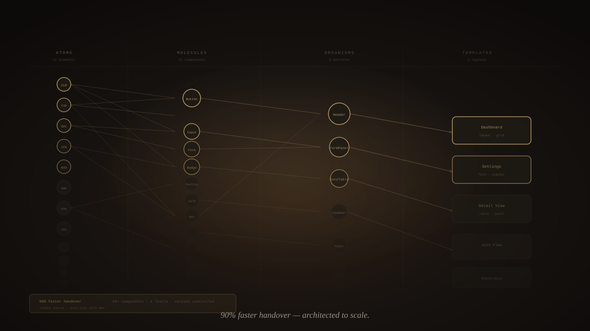
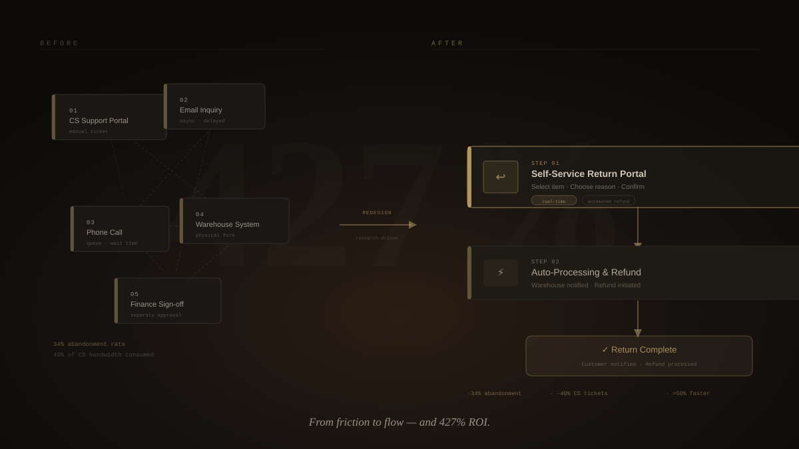
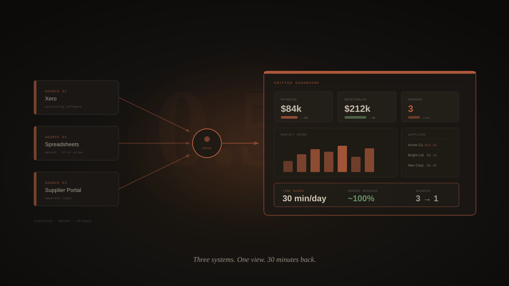
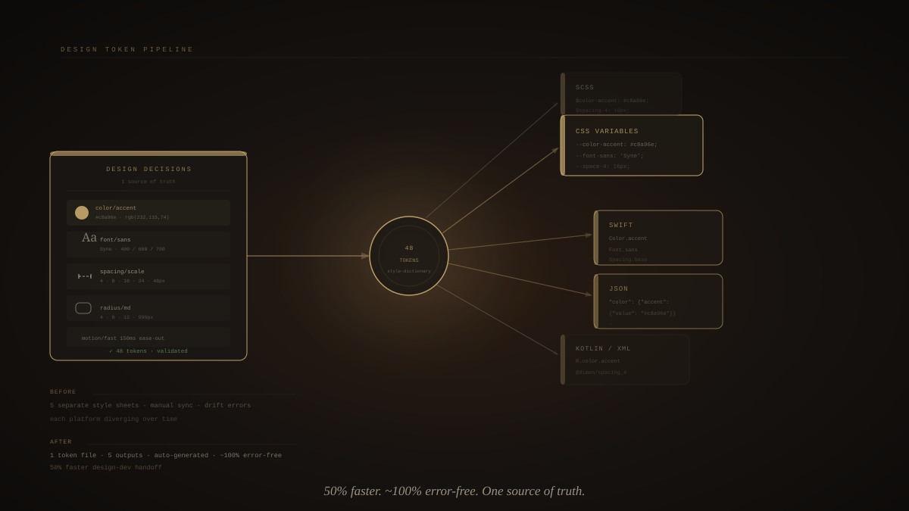
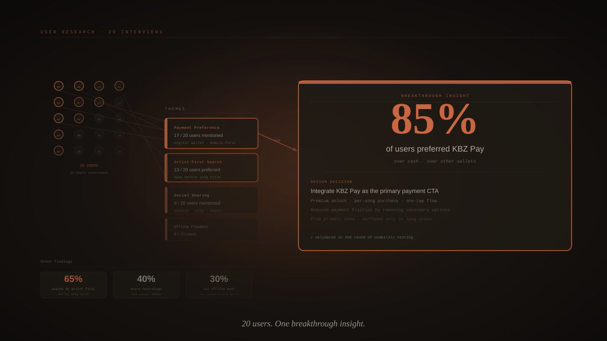

I find the friction, design it out, then check if it actually worked.
The projects I keep coming back to when someone asks what I actually do.
Sarah applied to 47 jobs and got 2 interviews. The problem wasn't her resume — it was the 40-minute manual tailoring ritual that still produced generic output. I replaced it with a 15-minute AI pipeline.
Job seekers spent 90 minutes per application manually tailoring resumes — pasting JDs into Google Docs, highlighting keywords, rewriting bullets — and still produced generic output that recruiters could spot instantly. A 4.2% callback rate when industry average for well-tailored applications is 12–15%.
A 4-step AI pipeline that scans the job description, maps it against a user's base resume, surfaces a plain-language gap analysis, and generates a tailored resume + cover letter in under 15 minutes. Reduced application time by 83% and lifted callback rates 2.5–3×.

User testing used to mean weeks of scheduling, facilitation, and synthesis. I designed a feature that replaced that wait with instant AI-simulated path analysis — and it became the top reason users upgraded.
Traditional user testing required weeks of recruiting, scheduling, and synthesizing sessions. Product teams were shipping blindly between cycles. The cost and delay meant most flows never got tested at all — especially edge cases and onboarding paths.
An AI-powered testing feature that simulates user paths through any prototype in seconds. Teams define a success goal, upload their design, and receive annotated path analysis with friction points and pass/fail breakdowns — no scheduling required. Became the #1 driver of Studio tier upgrades.

A broken return process had the CS team drowning in tickets. Four months of research, three rounds of testing, and 427% ROI later — here's how it happened.
The existing return process was fragmented across 5 different touchpoints, causing customer frustration and a 34% abandonment rate. Support tickets related to returns consumed 40% of the CS team's bandwidth, costing the business significantly.
Designed a unified self-service return portal with intelligent reason categorization, real-time status tracking, and automated refund processing. Reduced the 5-step fragmented flow to a streamlined 2-step experience with clear visual feedback at each stage.

Every morning, the finance team opened three different apps to see the same numbers. I made that one screen instead.
The finance team at Treedots relied on Xero, spreadsheets, and a supplier portal to manage daily revenue, expenses, and supplier payments. Data was scattered across three disconnected systems, requiring manual reconciliation that consumed half a working hour each morning.
Built a consolidated finance dashboard that unified revenue tracking, expense categorization, and supplier payment status into a single real-time view. Added automated data sync, smart filters, and one-click report generation that replaced the manual Xero-to-spreadsheet-to-portal workflow.

Token exports meant four separate files and four chances for things to drift. I wrote a plugin that made the whole process a single click.
Design tokens had to be manually extracted from Figma and translated into platform-specific formats (CSS, iOS, Android). This process was slow, error-prone, and created inconsistencies between design and code.
Created a Figma plugin that reads design variables and auto-generates platform-ready token files. Features include format preview, validation checks, semantic naming enforcement, and one-click export to multiple platforms simultaneously.

Lockdown closed every karaoke venue in Myanmar overnight. I talked to 20 people to understand what they actually missed — then designed for that.
During Myanmar's COVID lockdown, people lost access to their primary entertainment outlet — karaoke venues. No local digital alternative existed that understood Myanmar's unique karaoke culture, music preferences, and payment ecosystem.
Designed a mobile karaoke app with artist-first search, real-time lyrics sync, social room features for group singing, and integrated KBZ Pay for premium content. The research-driven approach ensured every feature mapped to validated user needs.
A bilingual (English/Myanmar) learning app to help designers master UX principles through active recall. Features spaced repetition, category filtering, and a clean study interface.
A design concept exploring visual composition and layout systems — built and published directly with Figma Sites as a design exploration project.
Five companies. One career switch from engineering. A lot of Figma files.
Things colleagues and managers actually said — not paraphrased.
The amount of passion you've put into your work is very much appreciated and truly inspiring. It's incredible how often you exceed expectations.
An amazing founder of the local UX design community. He shared his knowledge with the intention for designers to improve their skills.
An outstanding coworker with an entrepreneurial mindset and exceptional time management. Highly recommended for any business seeking new talent.
Harry's mentorship is transformative. He elevates everyone around him and drives meaningful impact through design.
Looking for a team that ships things and cares whether they work. Open to senior roles in product and UX.